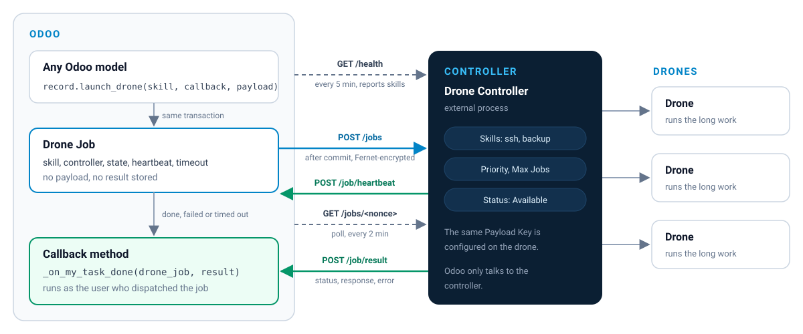
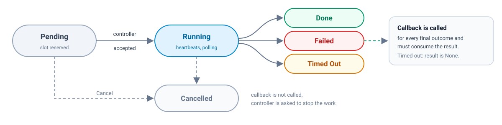

Generic job layer for Odoo
Run long work on external workers and get the result back in Odoo.
This module lets any Odoo model hand long-running work to external workers (“drones”) and receive the result through a callback method.
How it works

Use cases / context
Some work takes minutes or hours: long deployments, large transfers, builds. Running it inside Odoo holds an Odoo worker for the whole time and ties the work to the limits of that worker and of any cron that assumes the work happens inside Odoo.
This module moves such work out of Odoo. Odoo hands a payload to an external worker, keeps a job record, and is called back when the worker is done.
A generic job layer
It is a generic job layer only and ships no skills of its own. Skills are whatever a controller reports. This module does not define them.
Drones are not Odoo records
Odoo only talks to drone controllers, and each controller runs the work on its own drones.
Features
Drone Controllers
External processes that accept jobs and run them on their drones. A controller reports the skills it can run, and has a priority and an optional job limit.
Skills
The kinds of work a controller reports. The caller supplies the payload. This module ships no skills.
Jobs
One record per dispatched job: skill, controller, state, callback target, heartbeat and timeout. A job stores neither the parameters, the payload nor the result.
Two-phase dispatch
The job record and the controller reservation are created in the caller’s transaction; the submission to the controller happens only after that transaction commits. A rolled back transaction sends nothing.
Encryption
Each payload is encrypted with the Fernet key of the controller it is sent to.
Callback
The result is passed to the method given at dispatch, as the user who dispatched the job.
Poll and heartbeat
Controllers report progress with heartbeats, and Odoo polls running jobs periodically.
Timeout
Jobs whose heartbeat stops for longer than the timeout given at dispatch are ended as timed out, and the controller is asked to stop the work.
Menu
When only this module is installed, the root menu is Drone. When Cetmix Tower is installed, drones are in the Cetmix Tower menu.
Access
Drone Administrator is required to configure and manage drones: controllers, skills, jobs and cancelling a job from the screen. It is not required to use them. launch_drone() does not check this group. The code that calls it decides who may run that work.
Configuration
Drone Administrator is required to configure and manage drones.
That is the group for controllers, skills, jobs, keys, health, draining and cancelling a job from the screen. It grants Cetmix Tower Root, which is what those screens check.
Drone Administrator is not required to use drones.
Using a drone is a call to launch_drone() from your own code. That call does not check this group. The code that calls it decides who may run that work.
On a user, under Drone > Drone Access, set Administrator. Administrator grants Cetmix Tower Root, and through it User and Manager, so the Tower access levels do not have to be chosen separately. With demo data, the admin user is in this group.
When only this module is installed, the root menu is Drone.
When Cetmix Tower is installed, drones are in the Cetmix Tower menu. The root menu stays Cetmix Tower, and drone controllers, skills and jobs are opened from there. The paths below are those Cetmix Tower paths.
This module is not installed automatically. Install “Cetmix Drone” from the Apps menu.
This module ships no skills. Save a controller with a URL and keys, then click “Check Connection”. Skills are filled from the health reply and are read only. The skill list is not a place to create skills.
Go to Cetmix Tower › Settings › Drones › Drone Skills to see the skills controllers have reported. Skills are not created from this list: a record appears the first time a health reply contains its reference.
| Field | Description |
|---|---|
| Name | Label. A Drone Administrator can change it. A later health check does not overwrite it |
| Reference | Unique reference reported by the controller. Read only |
| Schema | Data and response schema stored for this skill. Read only. Filled by “Fetch Schema” on this form. A skill linked to no controller keeps the schema it already has |
Go to Cetmix Tower › Settings › Drones › Drone Controllers and click “New”. Complete the following fields:
| Field | Description |
|---|---|
| Name | Controller name |
| Reference | Unique reference. Leave this field blank to auto generate it. The controller uses it to report its status to Odoo |
| URL | Base URL of the controller API. Must be unique |
| Callback URL | Base address this controller uses to call Odoo. Result and heartbeat paths are added to it. A new controller stores the Odoo web base URL. Change it when the drone must call Odoo at another address, for example http://<container>:8069 on the same Docker network. The drone’s callback origin must be this same address |
| Skills | Skills reported by the last successful health check. Read only. The next successful health check replaces them. On this form they are a list. Open a row to see that skill’s schema as text, read only, with “Fetch Schema” in the header. The name is edited from Drone Skills. The controller list still shows skills as tags |
| Status | Current controller status. Jobs are sent only to active controllers in the “Available” status |
| Active | Inactive controllers receive no jobs |
| Priority | Controllers with a lower value are tried first |
| Max Jobs | Maximum number of pending and running jobs on this controller. 0 means no limit |
| Running Jobs | Current number of pending and running jobs. Read only |
| Jobs | Opens the drone jobs run on this controller. The count includes finished and cancelled jobs |
| Last Health Check | Time of the last successful health check. Read only |
Click “Fetch Schemas” to store the data and response schema each linked skill reports. A linked skill the answer omits has its schema cleared. This does not change the status, the skills or the last health check. A failed call changes nothing.
| Key | Description |
|---|---|
| Drone API Key | Sent by Odoo to the controller in every request |
| Payload Key | Fernet key used to encrypt job payloads. Generated automatically when left empty. Configure the same key on the drone |
| Drone Response Key | Sent by the controller to Odoo in every request |
Key values are stored in the vault and are never shown after saving. Click “Generate Keys” to replace all three and copy them once. The previous keys stop working. The same dialog also shows a result storage key for the drone’s stored results. That key is not saved in Odoo. Close the dialog and none of the keys are shown again.
Odoo checks the health of every active controller every 5 minutes. A healthy controller answers 200 with {"skills": ["ssh", "backup"]}. That check sets the status to “Available” and replaces the controller’s skills with that list. A 200 without that body sets the status to “Error” and does not change the stored skills. A connection failure sets the status to “Not Reachable” and any other HTTP status sets it to “Error”; neither changes the stored skills. A controller can also report its own status. That report does not change its skills.
Click “Check Connection” on the controller form to check it right away, for example after configuring it. This works for inactive and draining controllers too, which the cron skips. A draining controller keeps that status.
The health check does not load schemas. “Check Connection” does not load them either.
Go to Settings › Cetmix Tower › Drones and set “Drone Cron Batch Size”: the number of jobs the poll and stale pending crons ask controllers about in one batch. Default is 20. Every due job is still checked in each cron run: the remaining jobs are handled in the following batches.
Set the status to “Draining” to stop sending new jobs to a controller while its current jobs finish. Only a Drone Administrator can set or clear this status: neither the health check nor the controller itself changes it.
Usage
Drone Administrator is required to configure and manage drones, including the job list and the Cancel button below. It is not required to use drones. launch_drone() does not check this group. The code that calls it decides who may run that work. See “Developer contract”.
When Cetmix Tower is installed, drones are in the Cetmix Tower menu. The paths below are those paths. When only this module is installed, the root menu is Drone and the same entries are under it.
Go to Cetmix Tower › Logs › Drone Jobs to see dispatched jobs. All fields are read only:

| Field | Description |
|---|---|
| Skill | Skill of the job |
| Controller | Controller that holds the job |
| State |
Pendinga slot is reserved and the job may be in submission.
Runningthe controller accepted the job.
DoneFailedTimed Outthe job ended and its callback consumed the result.
Cancelledthe job was cancelled.
|
| Target Model, Target Records, Method | Callback that receives the result. Target Records holds the ids the callback is bound to. Empty means the callback runs on the model, with no records |
| User | The callback runs as this user |
| Created on, Last Heartbeat, Done Date | Job timestamps |
| Last Check | Last time a cron asked the controller about the job |
| Callback Attempts | Number of times the callback was called |
| Callback Error | Exception type, callback location and attempt number of the last failed callback call. It never contains the exception message or the result |
Click “Cancel” on a pending or running job. The job becomes “Cancelled” and, once that is saved, the controller is asked to stop the work. The callback is not called.
A pending job whose controller stays unreachable is retried indefinitely (see below); cancelling it is the only way to end it.
The callback runs inside the request or cron that delivers the result: the result request sent by the controller, the poll cron (every 2 minutes) or the timeout cron (every 15 minutes). Each cron batch asks controllers about at most “Drone Cron Batch Size” jobs; the remaining jobs are handled in the next batches of the same run. Anything the callback does synchronously runs there too, against that process’ limits.
For controller implementers
Every request carries Authorization: Bearer <Drone API Key>. Odoo waits at most 10 seconds to connect and 10 seconds for an answer.
| Action | Method | Path | Answer |
|---|---|---|---|
| Health | GET | /health | 200 with {"skills": ["ssh", "backup"]} |
| Skills | GET | /skills | 200 with a JSON object whose keys are skill references and whose values are {"data": <schema>, "response": <schema>} |
| Submit | POST | /jobs | 2xx when accepted; 4xx when rejected; 409 for a fenced nonce |
| Status | GET | /jobs/<nonce> | 200 with the job state; 404 for a nonce never accepted |
| Cancel | POST | /jobs/<nonce>/cancel | 2xx |
| Fence | POST | /jobs/<nonce>/fence | 200 {"state": "fenced"} or {"state": "accepted"} |
A skill token is a string of lowercase letters, digits and underscores. Extra keys in the health body are ignored. Duplicate tokens count once. A 200 whose body is missing, not JSON, not an object, or whose skills list contains anything else is an error: the status becomes “Error” (a draining controller keeps “Draining”) and the stored skills are left as they are. {"skills": []} clears the stored skills.
Odoo calls GET /skills only from “Fetch Schemas” on a controller and “Fetch Schema” on a skill. A failed call does not change the controller status or its skills.
Submit body is {"payload": "<token>"}. The token is the JSON envelope below, encrypted with the controller Payload Key (Fernet):
{
"nonce": "...",
"callback_url": "https://<odoo>/cetmix_drone/job/result",
"heartbeat_url": "https://<odoo>/cetmix_drone/job/heartbeat",
"timeout": 600,
"skill": "<skill reference>",
"data": {}
}
data is the payload the caller passed to launch_drone(). callback_url and heartbeat_url use the controller Callback URL. A new controller stores the Odoo web base URL there. Accept the job quickly and do the work asynchronously: a timeout on this request means “may have arrived”, not “rejected”.
Status answers one of:
{"state": "running"}
{"state": "finished", "status": ..., "response": ..., "error": ...}
{"state": "failed", "error": ...}
Nonce fence
Fence and Cancel must be decided atomically with accepting a nonce:
{"state": "fenced"}. On an accepted nonce it changes nothing and answers {"state": "accepted"}. Fence never stops work.A controller should reject a Submit with 4xx when it is full: the Max Jobs limit in Odoo cannot see work sent to the controller by anything else.
Every request carries Authorization: Bearer <Drone Response Key> and a JSON body.
POST /cetmix_drone/job/result
{"nonce": "...", "state": "finished", "status": 0, "response": "...", "error": null}
state is finished or failed. status, response and error may be values or lists. Answers: 200 when delivered or already decided, 404 unknown nonce, 403 wrong key, 400 invalid body, 503 when the callback did not consume the result. Retry on 503.
POST /cetmix_drone/job/heartbeat
{"nonce": "..."}
Answers: 200 while the job is pending or running, 409 when it has ended (stop the work), 404, 403.
POST /cetmix_drone/controller/status
{"reference": "<controller reference>", "status": "available"}
status is available, error or not_reachable. Answers: 200, 404 unknown reference, 403 wrong key, 400 other status, 409 while the controller is draining. This route does not change the controller’s skills.
For Odoo developers
launch_drone() is available on every model. No mixin, registration or decorator is needed. It does not require Drone Administrator, and it does not check any drone group. Who may use a drone is defined by the code that calls it: put the access check on your own action, button or method. The job record itself stays limited to Cetmix Tower Root, so read its fields with sudo().
job = record.launch_drone(
"my_skill",
record._on_my_task_done,
{"example": "value"},
drone_timeout=600,
)
| Argument | Rule |
|---|---|
skill | Skill reference, the string a controller reported. It is not checked against a list in Python. |
on_complete | A bound method of a recordset of one model, including several records or none. A lambda, a closure or a plain function is rejected. No records means the callback’s self is the model. A recordset that contains a new record is rejected, including one new record mixed with saved records, and a new record created with an origin. |
payload | One dictionary. It must be accepted by json.dumps(payload, allow_nan=False), so NaN and Infinity are rejected. It becomes data in the envelope. The same dictionary is encrypted for every controller tried. It is kept in memory only and is never stored. |
drone_timeout | Seconds without a heartbeat. 0 means no heartbeat timeout. A boolean is rejected. The default is 0. |
ValidationError before a controller is reserved, and no job is created.pending: a controller slot is reserved but nothing has been sent. The job is submitted after the current transaction commits. If the transaction rolls back, nothing is sent.sudo(). Calling launch_drone() does not require that group.def _on_my_task_done(self, drone_job, result):
...
return True
done, failed, timed_out. Not called for cancelled.drone_job.state already holds the outcome. result is the dict sent by the controller (status, response, error), or None for timed_out.self.env.cr.postcommit.add(...). A deferred function must re-read the job and its own record and act only if its outcome was actually saved: a rolled back callback attempt does not remove what it registered._cancel() cancels jobs without an access check: call it only after checking that the user may stop the work of the recordset or the model the job belongs to. That check is yours. action_cancel() is the screen button and requires Cetmix Tower Root, which Drone Administrator grants.
Bug tracker
Bugs are tracked on GitHub Issues. In case of trouble, please check there if your issue has already been reported. If you spotted it first, help us to smash it by providing a detailed and welcomed feedback.
Do not contact contributors directly about support or help with technical issues.
Credits
Authors: Cetmix
Maintainers: This module is part of the cetmix/cetmix-tower project on GitHub.
You are welcome to contribute.